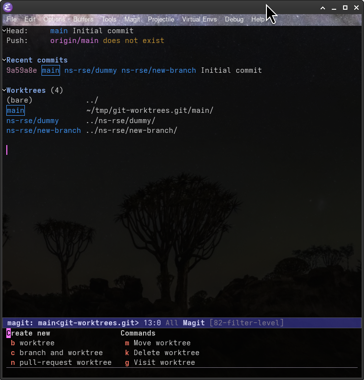

Git Worktrees
Neil Shephard ![]()
Research Software Engineering, Computer Science, University of Sheffield
Scan This
Git Worktrees
- First encountered in 2024
- Only started using widely five months ago
- Why?
- Challenges?
Why Worktrees?
- Single clone of a repository.
- Branches live in their own directory.
cd to/worktreeand you check it out.- No need to stash work-in-progress to checkout branches.
- Single Git history (no need for multiple
git clone)
No Worktrees
❱ cd ~/work/git/hub/ns-rse/
❱ git clone git@github.com:ns-rse/git-worktrees.git
❱ cd git-worktrees
❱ ls -lha
drwxr-xr-x neil neil 4.0 KB Fri May 1 09:09:16 2026 .
drwxr-xr-x neil neil 4.0 KB Fri May 1 09:07:36 2026 ..
drwxr-xr-x neil neil 4.0 KB Fri May 1 09:19:27 2026 .git # <<<< configuration directory
drwxr-xr-x neil neil 4.0 KB Fri May 1 09:07:38 2026 .github
.rw-r--r-- neil neil 49 B Fri May 1 09:07:38 2026 .gitignore
.rw-r--r-- neil neil 310 B Fri May 1 09:07:38 2026 .markdownlint-cli2.yaml
.rw-r--r-- neil neil 567 B Fri May 1 09:07:38 2026 .pre-commit-config.yaml
.rw-r--r-- neil neil 26 B Fri May 1 09:07:38 2026 .Rprofile
.rw-r--r-- neil neil 158 B Fri May 1 09:07:38 2026 _quarto.yml
drwxr-xr-x neil neil 4.0 KB Fri May 1 09:07:38 2026 img
.rw-r--r-- neil neil 7.9 KB Fri May 1 09:07:38 2026 index.qmd
.rw-r--r-- neil neil 6.9 KB Fri May 1 09:07:38 2026 LICENSE
.rw-r--r-- neil neil 7.7 KB Fri May 1 09:07:38 2026 README.md
drwxr-xr-x neil neil 4.0 KB Fri May 1 09:14:19 2026 renv
.rw-r--r-- neil neil 15 KB Fri May 1 09:07:38 2026 renv.lock
.rw-r--r-- neil neil 24 B Fri May 1 09:07:38 2026 requirements.txtConfig directory
❱ ls -lha .git
drwxr-xr-x neil neil 4.0 KB Wed Sep 23 09:28:15 2026 .
drwxr-xr-x neil neil 4.0 KB Tue Sep 22 12:17:46 2026 ..
.rw-r--r-- neil neil 459 B Fri May 1 11:58:15 2026 config
.rw-r--r-- neil neil 73 B Fri May 1 09:07:36 2026 description
.rw-r--r-- neil neil 21 B Fri May 1 09:07:38 2026 HEAD
drwxr-xr-x neil neil 4.0 KB Fri May 1 09:07:36 2026 hooks
.rw-r--r-- neil neil 1.4 KB Tue Sep 22 11:59:46 2026 index
drwxr-xr-x neil neil 4.0 KB Fri May 1 09:07:36 2026 info
drwxr-xr-x neil neil 4.0 KB Fri May 1 09:07:38 2026 logs
drwxr-xr-x neil neil 4.0 KB Tue Sep 22 12:33:47 2026 objects
.rw-r--r-- neil neil 112 B Fri May 1 09:07:38 2026 packed-refs
drwxr-xr-x neil neil 4.0 KB Fri May 1 11:58:37 2026 refs
drwxr-xr-x neil neil 4.0 KB Fri May 1 11:40:23 2026 rr-cache
drwxr-xr-x neil neil 4.0 KB Fri May 1 11:40:40 2026 worktreesWorktrees
❱ git clone --bare git@github.com:ns-rse/git-worktrees.git git-worktrees
❱ cd git-worktrees
❱ ls -lha
drwxr-xr-x neil neil 4.0 KB Fri May 1 09:21:32 2026 .
drwxr-xr-x neil neil 12 KB Fri May 1 09:21:25 2026 ..
.rw-r--r-- neil neil 131 B Fri May 1 09:21:32 2026 config
.rw-r--r-- neil neil 73 B Fri May 1 09:21:25 2026 description
.rw-r--r-- neil neil 21 B Fri May 1 09:21:32 2026 HEAD
drwxr-xr-x neil neil 4.0 KB Fri May 1 09:21:25 2026 hooks
drwxr-xr-x neil neil 4.0 KB Fri May 1 09:21:25 2026 info
drwxr-xr-x neil neil 4.0 KB Fri May 1 09:21:25 2026 objects
.rw-r--r-- neil neil 103 B Fri May 1 09:21:32 2026 packed-refs
drwxr-xr-x neil neil 4.0 KB Fri May 1 09:21:32 2026 refsBut where are my files? 🤷🤔
Creating Worktrees
- Typically want a copy of
main. git worktree addtakes two main arguments, thebranchand thepath.
- Create
ns-rse/new-branchbranch inns-rse/new-branch/directory
- Directories can be anywhere!
- Fetch remote branches first
Two Worktrees
Within ns-rse/
❱ tree ns-rse
[4.0K May 1 09:44] ns-rse
├── [4.0K May 1 09:44] ns-rse/dummy
│ ├── [4.0K May 1 09:44] ns-rse/dummy/img
│ │ └── [ 34K May 1 09:44] ns-rse/dummy/img/OSC_Sheffield.png
│ ├── [7.9K May 1 09:44] ns-rse/dummy/index.qmd
│ ├── [6.9K May 1 09:44] ns-rse/dummy/LICENSE
│ ├── [ 158 May 1 09:44] ns-rse/dummy/_quarto.yml
│ ├── [7.7K May 1 09:44] ns-rse/dummy/README.md
│ ├── [4.0K May 1 09:44] ns-rse/dummy/renv
│ │ ├── [ 32K May 1 09:44] ns-rse/dummy/renv/activate.R
│ │ └── [ 412 May 1 09:44] ns-rse/dummy/renv/settings.json
│ ├── [ 15K May 1 09:44] ns-rse/dummy/renv.lock
│ └── [ 24 May 1 09:44] ns-rse/dummy/requirements.txt
└── [4.0K May 1 09:40] ns-rse/new-branch
├── [4.0K May 1 09:40] ns-rse/new-branch/img
│ └── [ 34K May 1 09:40] ns-rse/new-branch/img/OSC_Sheffield.png
├── [7.9K May 1 09:40] ns-rse/new-branch/index.qmd
├── [6.9K May 1 09:40] ns-rse/new-branch/LICENSE
├── [ 158 May 1 09:40] ns-rse/new-branch/_quarto.yml
├── [7.7K May 1 09:40] ns-rse/new-branch/README.md
├── [4.0K May 1 09:40] ns-rse/new-branch/renv
│ ├── [ 32K May 1 09:40] ns-rse/new-branch/renv/activate.R
│ └── [ 412 May 1 09:40] ns-rse/new-branch/renv/settings.json
├── [ 15K May 1 09:40] ns-rse/new-branch/renv.lock
└── [ 24 May 1 09:40] ns-rse/new-branch/requirements.txt
7 directories, 18 filesSwitching branches worktrees
During work in-progress…
No Worktrees
- ✅ Different branches can have their own virtual environment with different dependencies.
- ✅ No need to
git stashwork in progress to checkout another branch. - ✅ Switching branches is as simple as
cd-ing into the directory1.
Challenges
- Need to create virtual environment in each directory.
- Large dependencies will increase required space.
- No
pre-commitinstalled in worktree - No
.justfile
Solutions
- Bloated directories require discipline to remove old worktree directory.
- Not more onerous than removing old branches.
- Use a
post-checkouthook 🪄- setup a virtual environment with
uv - add a
.justfilefor thejustrunner - add a
.envrcand allowdirenvin the worktree directory - install
pre-commithooks
- setup a virtual environment with
- Assumes using nested
<github-user>/<branch-name>structure for worktree directories (modifyBASE_PATHif needed).
Post-checkout hook
Find in my dotfiles.
#!/bin/bash
#
# Inspiration from : https://mskelton.dev/bytes/20230906143340
#
if [[ "$1" == "0000000000000000000000000000000000000000" ]]; then
# Base directory for bare repository
BASE_PATH="$(git rev-parse --git-dir)/../../"
MAIN_PATH="${BASE_PATH}/main"
# If main/.justfile doesn't exist create it
if [ ! -f "${MAIN_PATH}/.justfile" ]; then
echo "No .justfile creating a basic skeleton"
printf "
@default:
@just --list
" > ${MAIN_PATH}/.justfile
printf "
# Profile a test file
test_profile:
mkdir prof
python -m cProfile -o prof/$(git rev-parse HEAD)_$(date +%Y%m%d).prof $(which pytest) tests/test_<file>.py
" >> ${MAIN_PATH}/.justfile
printf "
# Serve mkdocs
mkdocs:
mkdocs serve --watch docs" >> ${MAIN_PATH}/.justfile
printf "
# Pre-commit ruff-check all files
pc_ruff:
pre-commit run ruff-check --all-files ; pre-commit run ruff-format --all-files
" >> ${MAIN_PATH}/.justfile
printf "
# Pre-commit ruff-check all files
pc_npd:
pre-commit run numpydoc-validation --all-files
" >> ${MAIN_PATH}/.justfile
printf "
# Pre-commit blacken all files
pc_black:
pre-commit run blacken-docs --all-files
" >> ${MAIN_PATH}/.justfile
printf "
# Pre-commit prettier all files
pc_prettier:
pre-commit run prettier --all-files
" >> ${MAIN_PATH}/.justfile
printf "
# Pre-commit markdownlint-cli2 all files
pc_markdown:
pre-commit run markdownlint-cli2 --all-files
" >> ${MAIN_PATH}/.justfile
printf "
# Pre-commit pylint all files
pc_pylint:
pre-commit run pylint --all-files
" >> ${MAIN_PATH}/.justfile
printf "
# Pytest everything
pytest:
pytest --cov=src --cov-branch --numprocesses=logical
" >> ${MAIN_PATH}/.justfile
printf "
# Pytest with Matplotlib html report
pytest_mpl_html_report:
mkdir -p tmp/mpl
pytest tests/test_plotting.py --mpl-generate-summary html --mpl-results-path tmp/mpl
" >> ${MAIN_PATH}/.justfile
printf "
# Pytest update Matplotlib snapshots
pytest_mpl_update:
mkdir -p tests/__mpl_snapshots__/
pytest tests/test_plotting.py --mpl-generate-path=tests/__mpl_snapshots__
pytest tests/test_classes.py --mpl-generate-path=tests/__mpl_snapshots__
" >> ${MAIN_PATH}/.justfile
printf "
# Pytest update Syrupy snapshots
pytest_snapshot_update:
pytest --snapshot-update
" >> ${MAIN_PATH}/.justfile
printf "
# Pytest update Maplotlib and Syrupy snapshots
pytest_update:
just pytest_mpl_update
just pytest_snapshot_update
" >> ${MAIN_PATH}/.justfile
printf "
# uv sync and lock
uv_upgrade:
uv sync
uv lock --upgrade
" >> ${MAIN_PATH}/.justfile
printf "
# uv pip install all
pip_install:
uv pip install --editable . --group dev
" >> ${MAIN_PATH}/.justfile
printf "" >> ${MAIN_PATH}/.justfile
fi
# If main/envrc doesn't exist create it
if [ ! -f "${MAIN_PATH}/.envrc" ]; then
echo "No .envrc creating a basic skeleton"
printf "#!/bin/bash
source .venv/bin/activate
export PATH=${VIRTUAL_ENV}/bin:${PATH}" > ${MAIN_PATH}/.envrc
fi
# Copy main/.{envrc,justfiles} to current directory
FILES=(".justfile" ".envrc")
for FILE in "${FILES[@]}"; do
echo "Copying main/'${FILE}' to $(pwd)/${FILE}"
cp "${MAIN_PATH}/${FILE}" "$(pwd)/${FILE}"
done
# Create a virtual environment using uv and install the current Python package
if [ ! -d ".venv/" ]; then
uv venv
uv sync
just pip_install
# Allow direnv so venv can be activated
if [ -f ".envrc" ]; then
direnv allow
fi
fi
# Enable pre-commit if not already enabled
if [ ! -f "${BASE_PATH}/hooks/pre-commit" ]; then
pre-commit install
fi
fiResulting .justfile
@default:
@just --list
# Profile a test file.
test_profile:
mkdir prof
python -m cProfile -o prof/$(git rev-parse HEAD)_$(date +%Y%m%d).prof $(which pytest) tests/test_<file>.py
# uv pip install package with dev group dependencies
pip_install:
uv pip install --editable . --group dev
# Serve mkdocs
mkdocs:
mkdocs serve --watch docs
# Pre-commit ruff-check all files
pc_ruff:
pre-commit run ruff-check --all-files
# Pre-commit numpydoc all files
pc_npd:
pre-commit run numpydoc-validation --all-files
# Pre-commit blacken all files
pc_black:
pre-commit run blacken-docs --all-files
# Pre-commit prettier all files
pc_prettier:
pre-commit run prettier --all-files
# Pre-commit markdownlint-cli2 all files
pc_markdown:
pre-commit run markdownlint-cli2 --all-files
# Pre-commit pylint all files
pc_pylint:
pre-commit run pylint --all-files
# Pytest everything
pytest:
pytest --cov=src --cov-branch --numprocesses=logical
# Pytest with Matplotlib html report
pytest_mpl_html_report:
mkdir -p tmp/mpl
pytest tests/test_plotting.py --mpl-generate-summary html --mpl-results-path tmp/mpl
# Pytest update Matplotlib snapshots
pytest_mpl_update:
mkdir -p tests/__mpl_snapshots__/
pytest tests/test_plotting.py --mpl-generate-path=tests/__mpl_snapshots__
pytest tests/test_classes.py --mpl-generate-path=tests/__mpl_snapshots__
# Pytest update Syrupy snapshots
pytest_snapshot_update:
pytest --snapshot-update
# Pytest update Maplotlib and Syrupy snapshots
pytest_update:
just pytest_mpl_update
just pytest_snapshot_update
# uv sync and lock
uv_upgrade:
uv sync
uv lock --upgradeResulting .envrc
#!/bin/bash
source .venv/bin/activate
export PATH=${VIRTUAL_ENV}/bin:${PATH}
New worktree
- ✅
.justfilewith lots of runners defined. - ✅
uvvirtual environment created and synced. - ✅ Working
.envrcanddirenv allowrun. - ✅
pre-commithooks installed and set to run.
Emacs/Magit Integration
- ✅ Magit, the Git porcelain for Emacs, supports worktrees.
- ✅ List worktrees in the Magit buffer, easy to switch (cursor on point hit
Return) - ✅
Zpulls up the transient buffer for worktree management. - ✅ Still use Forge to interact with and create issues/pull requests GitHub/GitLab.


Blog Post
Links
- Practical Guide to Git Worktree - DEV Community
- Git Worktrees in Use. Most of us use Git every day, but… << This seems good, clearest so far.
- Git - git-worktree Documentation
- Git Worktrees: Git Done Right - Just Some Dev
- Improving my productivity and context switching with git worktrees
- GitKraken - How to Use Git Worktree | Add, List, Remove
Hooks
- Using Git Hooks When Creating Worktrees | Mark Skelton
- githooks - Using Git hooks with worktree - Stack Overflow
Tools
Quarto RevealJS Template
Slides : ns-rse.github.io/git-worktrees